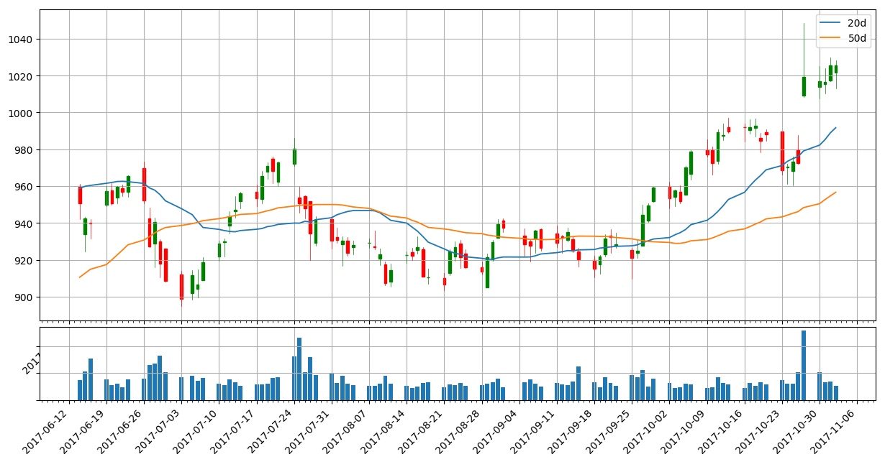
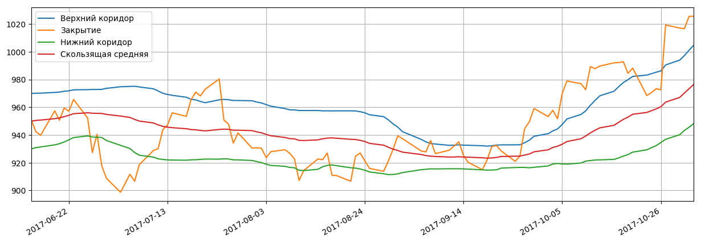
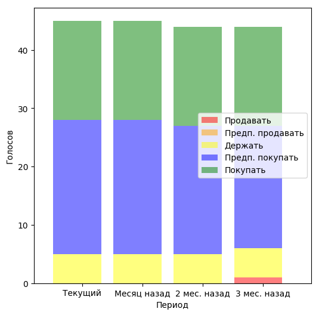
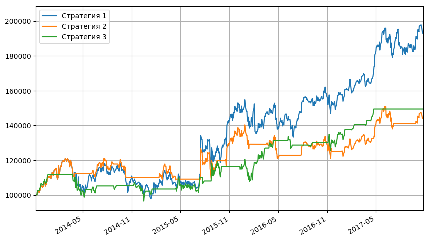
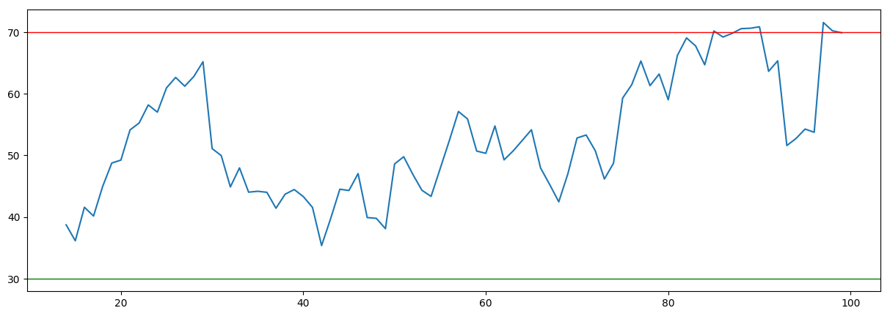
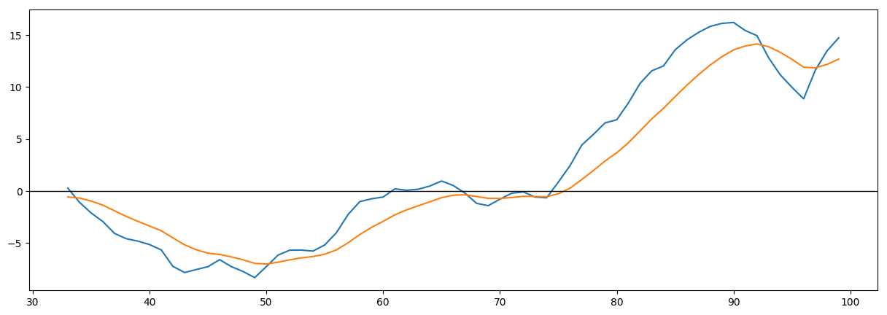
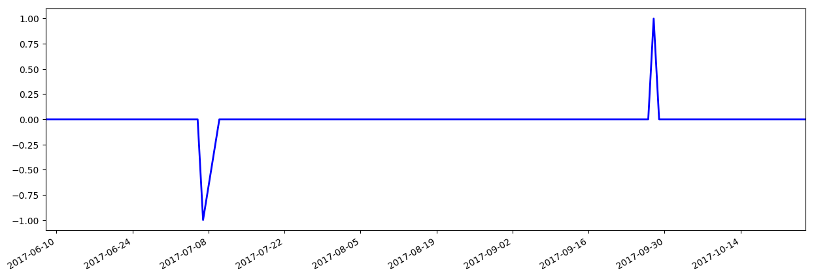

Котировки акций: Показать все
| Дата | Открытие | Минимум | Максимум | Закрытие | Объем |
|---|---|---|---|---|---|
| 2017-10-31 | 1 015.219971 ▲ | 1 010.419983 ▲ | 1 024.000000 ▼ | 1 016.640015 ▼ | 1 330 700.0 ▼ |
| 2017-10-30 | 1 014.000000 ▲ | 1 007.500000 ▼ | 1 024.969971 ▼ | 1 017.109985 ▼ | 2 085 100.0 ▼ |
| 2017-10-27 | 1 009.190002 ▲ | 1 008.200012 ▲ | 1 048.390015 ▲ | 1 019.270020 ▲ | 5 167 700.0 ▲ |
| 2017-10-26 | 980.000000 ▲ | 972.200012 ▲ | 987.599976 ▲ | 972.559998 ▼ | 2 042 100.0 ▲ |
| 2017-10-25 | 968.369995 ▼ | 960.520020 ▼ | 976.090027 ▲ | 973.330017 ▲ | 1 211 300.0 ▼ |
Японские свечи, объемы продаж, касательные 20-50:
Основные фин.показатели:
| Доходы (квартал), в млн.USD | 3 мес. 2017-09-30 | 3 мес. 2017-06-30 | 3 мес. 2017-03-31 | 3 мес. 2016-12-31 | 3 мес. 2016-09-30 |
|---|---|---|---|---|---|
| Общий доход | 27,772.00 | 26,010.00 | 24,750.00 | 26,064.00 | 22,451.00 |
| Общие эксплуатационные расходы | 19,990.00 | 21,878.00 | 18,182.00 | 19,425.00 | 16,684.00 |
| Операционный доход | 7,782.00 | 4,132.00 | 6,568.00 | 6,639.00 | 5,767.00 |
| Чистая прибыль | 6,732.00 | 3,524.00 | 5,426.00 | 5,333.00 | 5,061.00 |
| Пониженная прибыли на акцию (EPS) без ЧС | 8.97 | 5.01 | 7.75 | 7.62 | 7.25 |
| Баланс (квартал), в млн.USD | На 2017-09-30 | На 2017-06-30 | На 2017-03-31 | На 2016-12-31 | На 2016-09-30 |
| Всего текущих активов | 119,345.00 | 112,386.00 | 108,794.00 | 105,408.00 | 98,546.00 |
| Недвижимость/Имущество/Оборудование Всего | 56,358.00 | 53,341.00 | 50,321.00 | 47,527.00 | 46,094.00 |
| Всего активов | 189,536.00 | 178,621.00 | 172,756.00 | 167,497.00 | 159,948.00 |
| Общий долгосрочный долг | 3,964.00 | 3,955.00 | 3,937.00 | 3,935.00 | 3,938.00 |
| Всего обязательств | 32,436.00 | 30,335.00 | 27,807.00 | 28,461.00 | 25,845.00 |
| Общий капитал | 157,100.00 | 148,286.00 | 144,949.00 | 139,036.00 | 134,103.00 |
| Cash-flow (квартал), в млн.USD | 9 мес. 2017-09-30 | 6 мес. 2017-06-30 | 3 мес. 2017-03-31 | 12 мес. 2016-12-31 | |
| Поступления от операционной деятельности | 26,823.00 | 16,951.00 | 9,548.00 | 36,036.00 | |
| Поступления от инвестиционной деятельности | -24,427.00 | -10,023.00 | -2,851.00 | -31,165.00 | |
| Поступления от финансовой деятельности | -5,120.00 | -4,414.00 | -1,674.00 | -8,332.00 | |
| Чистый остаток денежных средств | -2,337.00 | 2,793.00 | 5,214.00 | -3,631.00 |
Полосы Боллинджера:
Последние финансовые новости: Показать все
| Дата | Заголовок | Источник |
|---|---|---|
| 2017-10-31 15:58 | Analyst Update для Alphabet Inc. (NASDAQ: GOOGL) | finnewsweek |
| Отслеживая консенсусную оценку EPS за квартал для Alphabet Inc. (NASDAQ: GOOGL), мы отметили, что текущее число составляет 10,26. Эта оценка EPS использует 29 аналитиков Wall Street, опрошенных Zacks Research. В прошлом квартале компания заявила квартальный ЭПС 9,57. Аналитики на стороне продаж занимаются изучением компаний и оценкой будущих результатов. Эти оценки несут большой вес на Улице, и прибыли или промахи прибыли вращаются вокруг этих чисел. Иногда эти прогнозы очень близки к фактическому количеству сообщений, а в других случаях их нет. Когда компания сообщает о фактических доходах, фактор неожиданности может привести к скачке или погружению цены акций. Если компания бьет оценки и публикует положительный сюрприз, акции могут увидеть краткосрочный скачок цен. С другой стороны, негативный сюрприз может отправить акции вниз. Многие инвесторы предпочтут быть осторожными в отношении выпусков прибыли и ждать, чтобы сделать ход, пока цена акций не стабилизируется. Инвесторы могут расчесывать все последние отчеты о доходах компании. Они могут пытаться выяснить, какие компании выглядят так, как будто они будут сильными в течение следующих нескольких кварталов. Отчеты о доходах имеют возможность вызвать резкие колебания цен акций. Многие инвесторы будут держаться подальше от крупных сделок с объявлениями о доходах. Когда пыль оседает, может быть намного легче определить, стоит ли покупать запас или если она должна быть продана. Следящий за историческими результатами заработка может дать хорошее представление. Компании, которые последовательно производят твердую прибыль, могут заслуживать дальнейшего изучения, особенно если инвестор находится на заборе о том, чтобы попасть в имя. Сосредоточив внимание на мнениях аналитиков, мы отмечаем, что текущая средняя рекомендация брокера по акциям Alphabet Inc. (NASDAQ: GOOGL) в настоящее время составляет 1,38. Рекомендация относится к шкале от 1 до 5. Брокерский рейтинг 1 будет переведен в сильную покупку. Рейтинг 5 будет указывать на рекомендацию «Сильная продажа». Этот рейтинг консенсус-брокера может помочь пролить свет на то, как на стороне продажи сейчас просматривается акционерный капитал компании. На основе аналитиков на стороне продаж, опрошенных Zacks Research, 25 оценили акции на Сильную покупку или покупку. Аналитики по акциям будут регулярно предоставлять прогнозные цены на акции. Многие инвесторы очень заинтересованы в том, где аналитики рассматривают курс акций в будущем. В настоящее время аналитики, опрошенные Zacks Research, установили консенсусную целевую цену в размере 1117,66 долл. США по акциям Alphabet Inc. (NASDAQ: GOOGL). Оценочные целевые оценки могут быть рассчитаны с использованием разных методов, и они могут варьироваться в зависимости от конкретного аналитика. Тщательно исследованный отчет аналитика, как правило, дает подробное объяснение конкретной целевой ценовой оценки. Некоторые инвесторы могут очень внимательно отслеживать цели аналитиков и использовать данные для дополнения своего собственного анализа акций. Наблюдая активность акций в Alphabet Inc. (NASDAQ: GOOGL), мы обнаружили акции, торгующиеся вблизи уровня 1033.13. Инвесторы часто будут следить за уровнем цен на акции относительно своих 52-недельных максимумов и минимумов. 52-недельный максимум в настоящее время составляет 1033,67, а 52-недельный минимум составляет 753,22. Когда цена акций приближается к 52-недельному максимуму или 52-недельному минимуму, инвесторы могут внимательно следить за деятельностью, чтобы следить за прорывом. За последние 12 недель акции выросли на 9,24%. Возвращаясь к началу года, мы видим, что акции изменились на 30,37%. Увеличившись в последние 4 недели, акции увидели изменение на 6,79%. За последнюю неделю акции выросли на 4,83%. | ||
| 2017-10-31 15:55 | Технологический запас не удерживается и не продается: Alphabet Inc. (GOOG) | streetobserver |
| Цена акций Alphabet Inc. (GOOG) торгуется с понижающимся изменением вместе с объемом 2,08 млн. Акций на торговой сессии в понедельник. Акции являются торговой ценой в $ 1017,11 с переходом -0,21%. Средний объем компании за 3 месяца составляет 1,36 млн. Человек. Когда мы делим последний объем торгов на средний объем за 3 месяца, мы обнаружили относительный объем 1,53. Текущие уровни цен на торговлю помещают акции GOOG на -2,98% в сторону от 52-недельного максимума и закрыты на 39,80% от 52-недельного минимума. Общая стоимость доллара всех 680,92 млн. Выпущенных акций составляет 692,57 млрд. Долларов США. Рекомендация аналитиков для Alphabet Inc. (GOOG) Аналитики имеют консенсус-рейтинг 1,60 на акции. Это основано на 1-5 числовой шкале, где шкала рейтингов: 1.0 Сильная покупка, 2.0 Покупать, 3.0 Держать, 4.0 Продать, 5.0 Сильная Продать. Рейтинг покупки - рекомендация приобрести определенную систему безопасности. Рейтинг покупки от аналитика или исследовательской фирмы - это рекомендация о покупке безопасности с предполагаемой настойчивостью в том, что безопасность недооценена каким-то образом. Технические индикаторы Alphabet Inc. (GOOG) Трейдеры часто используют несколько скользящих средних для анализа одной безопасности. Скользящие средние - очень простой инструмент для использования, как и большинство технических индикаторов, различные трейдеры будут сосредоточены на разных способах их использования. Долгосрочная скользящая средняя может использоваться для определения первичного тренда цен, более короткого скользящего среднего периода для определения вторичного, ценового тренда и еще более короткого скользящего среднего периода для определения тенденции незначительной цены. Обычно 20-дневная простая скользящая средняя полезна при определении тенденций торговли свингом, продолжающихся 20 дней. Более короткие скользящие средние сроки более чувствительны к колебаниям цен и могут быстрее набирать тенденции, чем долгосрочные скользящие средние. Однако эти более частые сигналы могут также приводить к большему количеству «whipsaws», что приводит к ошибочным торговым сигналам. Alphabet Inc. (GOOG) недавно закрылась с ростом на 3,88% до 20-дневного простого скользящего среднего. Эта короткая временная рамка представляет собой восходящее движение текущей цены по средней цене за последние 20 дней. Теперь переход к промежуточному временному интервалу, 50-дневное скользящее среднее является более полезным при показе трендов позиции, длительностью 50 дней. Акции GOOG продвинулись вверх с изменением на 7,25% до 50-дневного скользящего среднего. Это восходящее движение показывает положительное направление цен за последние 50 дней. Наконец, наблюдая за долгосрочными временными рамками, 200-дневная простая скользящая средняя является более полезной при описании общих тенденций инвестиций, продолжающихся 200 дней. Более длительные скользящие средние временные рамки менее чувствительны к колебаниям цен, чем краткосрочные таймфреймы, и будут генерировать гораздо меньше сигналов. Это уменьшит количество «whipsaws», что хорошо, но также будет генерировать сигналы позже, чем при использовании среднесрочных средних. Цена акций GOOG показала оптимистичный ход 12,75% по сравнению с средней ценой за последние 200 дней. Это сравнение показало направление цены выше 200-SMA. | ||
| 2017-10-31 14:14 | Alphabet Inc. (GOOGL) Учитывая новые $ 1,150.00 Целевая цена в Stifel Nicolaus | dispatchtribunal |
| Alphabet Inc. (NASDAQ: GOOGL) повысила целевую цену по цене Stifel Nicolaus с $ 1,075.00 до $ 1,150.00 в исследовании, опубликованном в понедельник. В настоящее время брокерская компания имеет рейтинг покупок на складе поставщиков информационных услуг. Несколько других аналитиков рынка акций также недавно прокомментировали GOOGL. Б. Райли пересчитал рейтинг покупки и установил ценовую цель в размере 1,050 долларов США на акции «Алфавит» в отчете в воскресенье, 30 июля. SunTrust Banks, Inc. пересчитала рейтинг покупок и установила ценовую цель в размере 1,180 долларов США (ранее, начиная с $ 1,100.00), по акциям Алфавита в отчете в пятницу. KeyCorp пересчитал рейтинг покупки и установил ценовую цель в размере 1 150 долларов США по акциям Alphabet в отчете в пятницу. BMO Capital Markets вновь подтвердило рейтинг рынка и установил ценовую цель в размере 970 долларов США по акциям Alphabet в отчете в пятницу. Наконец, Royal Bank of Canada повысил свою ценовую цель на Алфавите с $ 1,050.00 до $ 1,125.00 и дал компании рейтинг в рейтинге в пятницу. Один аналитик по ценным бумагам оценил акции с рейтингом продажи, восемь из них присвоили рейтинг холдинга, тридцать девять получили рейтинг покупки, а один дал сильный рейтинг для компании. В настоящее время запасы имеют средний рейтинг «Покупать» и достижение консенсусной цены в размере 1 087,02 доллара США. Акции Alphabet (NASDAQ GOOGL) торгуются на 0,13% во время торгов в середине дня в понедельник, достигнув $ 1031,78. Акции имели объем торгов 665 376 акций. Алфавит имеет 1-летний минимум 743,59 долларов США и 1-летний максимум в 1,063,62 доллара. Фирма имеет рыночную капитализацию в размере 714,90 млрд. Долл. США, отношение PE - 37,39 и бета-версию 0,96. 50-дневная скользящая средняя составляет $ 976,09, а ее 200-дневная скользящая средняя составляет $ 956,78. Алфавит (NASDAQ: GOOGL) в последний раз опубликовал результаты своих доходов в четверг, 26 октября. Поставщик информационных услуг сообщил о прибыли в размере 9,57 долл. За акцию за квартал, превысив консенсусную оценку Закса в размере 8,43 долл. США на 1,14 долл. США. Доход компании составил 22,27 млрд долл. В течение квартала по сравнению с консенсус-прогнозом в размере 21,94 млрд долл. США. Азбука имела доходность в размере 14,26% и чистую маржу в размере 20,09%. За тот же период в предыдущем году компания разместила прибыль в размере 9,06 долл. За акцию. Аналитики по акциям ожидают, что Alphabet опубликует прибыль на акцию за акцию в размере $ 32,05 за текущий год. НЕЗАКОННАЯ ДЕЯТЕЛЬНОСТЬ ПРЕДУПРЕЖДЕНИЕ: этот кусок был первоначально отправлен Трибуналом по рассылке и является собственностью Трибунала по рассылке. Если вы просматриваете этот фрагмент в другом домене, он незаконно украден и переиздан в нарушение законодательства США и международного законодательства о товарных знаках и авторских правах. Верную версию этой части можно получить по адресу https://www.dispatchtribunal.com/2017/10/31/alphabet-inc-googl-given-new-1150-00-price-target-at-stifel-nicolaus. HTML. Несколько институциональных инвесторов недавно купили и продали акции бизнеса. Pure Financial Advisors Inc. увеличила свою долю в акциях Alphabet на 0,4% во втором квартале. Теперь Pure Financial Advisors Inc. владеет 278 акциями акций поставщика информационных услуг на сумму 258 000 долларов США после покупки дополнительных 1 акций в течение последнего квартала. Компания Delta Asset Management LLC TN увеличила свою долю в акциях «Алфавит» на 1,5% в первом квартале. Delta Asset Management LLC TN теперь владеет 136 пакетами акций поставщика информационных услуг на сумму 116 000 долларов США после покупки дополнительных 2 акций в течение последнего квартала. Компания Baystate Wealth Management LLC увеличила свою долю в акциях Alphabet на 0,7% во втором квартале. В настоящее время Baystate Wealth Management LLC владеет 295 акциями акций поставщика информационных услуг на сумму 288 000 долларов США после покупки дополнительных 2 акций в течение последнего квартала. First Bank & Trust увеличил свою долю в акциях Alphabet на 0,3% во втором квартале. First Bank & Trust теперь владеет 764 акциями акций поставщика информационных услуг на сумму 710 000 долларов США после покупки дополнительных 2 акций в течение последнего квартала. Наконец, Fort Pitt Capital Group LLC увеличила свою долю в акциях Alphabet на 0,3% во втором квартале. В настоящее время Fort Pitt Capital Group владеет 723 акциями акций поставщика информационных услуг на сумму 672 000 долларов США после покупки дополнительных 2 акций в течение последнего квартала. 33,87% акций принадлежит институциональным инвесторам и хедж-фондам. Профиль компании Alphabet Alphabet Inc является холдинговой компанией. Компании компании включают Google Inc (Google) и ее интернет-продукты, такие как Access, Calico, CapitalG, GV, Nest, Verily, Waymo и X. В сегменты компании входят Google и другие ставки. В сегменте Google представлены его интернет-продукты, такие как поиск, реклама, торговля, карты, YouTube, Google Cloud, Android, Chrome и Google Play, а также его аппаратные инициативы. Количество просмотров: ArticleHistoryID = 12394313 & постдатировать = 2017-10-31 & типа = а & вторичные = 1 & ID = 916196 Получайте новости и рейтинги Alphabet Inc. Daily. Введите свой адрес электронной почты ниже, чтобы получить краткий обзор последних новостей и рейтингов аналитиков для Alphabet Inc. и связанных с ними компаний с бесплатным ежедневным электронным бюллетенем MarketBeat.com. | ||
| 2017-10-31 14:02 | Алфавит, Inc. Управление разговорами Приобретения, драйверы роста и аппаратное обеспечение. В третьем квартале Alphabet есть больше материала, чем его ожидаемый доход и прибыль на акцию. | fool |
| Финансово, Алфавит (NASDAQ: GOOGL) (NASDAQ: GOOG) сокрушил его в третьем квартале. В преддверии третьего квартала рост доходов технического гиганта уже впечатляюще. Тем не менее, рост основной материнской компании Google по-прежнему ускорился в третьем квартале, увеличившись на 24% в годовом исчислении, опередив оценки аналитиков примерно на 600 млн долларов. Нижняя строка алфавита аналогично оценивает оценки. Но в третьем квартале Alphabet было больше, чем аналитик, выигрывающий доход и EPS. В третьем квартале заработка в Алфавите руководство обсудило приобретения, драйверы роста и свою стратегию в отношении оборудования - все важные повествования для инвесторов, чтобы следить за ними. В последнее время Алфавит, покупая часть бизнеса HTC, чтобы усилить свой аппаратный бизнес, один аналитик хотел получить информацию о том, как менеджмент думает о распределении капитала и приобретении. Хотя подход руководства к рассматриваемым и приобретающим компаниям не изменился, полезно рассмотреть линию мышления Алфавита по важному вопросу. Алфавит Финансовый директор Рут Порат объяснил (через S & P Global Market Intelligence): Благодаря тому, что Alphabet опубликовал один из самых высоких показателей роста доходов за год в течение пяти лет, один аналитик хотел большего цвета относительно того, были ли факторы в течение квартала, которые были аномалией, или были ли водители устойчивыми аспектами бизнеса Alphabet. Хотя Порат не ответил на вопрос напрямую, ее ответ предполагает, что Алфавит извлекает выгоду из некоторых основных факторов роста, которые, вероятно, будут придерживаться. Другими словами, бизнес Alphabet пользуется сильным широким ростом, а не только его основными сегментами доходов, но из более мелких категорий, таких как «другой» доход Google (облако, магазин приложений Google Play и аппаратное обеспечение) и «Другие ставки», выручка (меньшие компании «Лос-Анджелес»). Учитывая недавнее приобретение компанией Alphabet части бизнеса HTC и ее недавний запуск восьми новых аппаратных продуктов под маркой Google, руководство явно уделяет приоритетное внимание аппаратным средствам больше, чем в прошлом. Это побудило одного аналитика обратиться к руководству с просьбой уточнить его цели в отношении аппаратного обеспечения, а также прокомментировать, как это повлияет на его отношения с партнерами Android. Генеральный директор Google Сундар Пичай ответил: Итак, хотя Alphabet расширяет свои аппаратные усилия, не ожидайте, что он смягчит свои усилия в партнерстве с производителями оборудования, такими как Samsung. Похоже, что компания хочет иметь сильное присутствие в аппаратных средствах, не пересиливая свои существующие отношения с производителями оригинального оборудования. В целом, рост выручки Алфавита в третьем квартале усилил факторы, лежащие в основе сильной конкурентной позиции компании. Сильный, широкомасштабный рост, похоже, будет продолжаться. | ||
| 2017-10-31 12:06 | CDH Китая, SenseTime, собравший около $ 450 млн фонда AI | nasdaq |
| Жюли Чжу HONG KONG, 31 октября (Рейтер) - Китайская CDH Investments и основанная на Гонконге SenseTime Group собирают около 3 млрд. Юаней (453 млн. Долл. США) для инвестиций в фирмы, работающие над технологией искусственного интеллекта (AI), два источника, которые знают говорится в сообщении агентства Reuters. План компаний для фонда, который, согласно источникам, будет в основном использоваться для инвестиций в стартапы Инициативы роста в мире, приходит на фоне стремления Пекина стать лидером в технологии, которая все больше становится ключом к различным секторам. Один из источников сказал, что основанная в Пекине инвестиционная фирма CDH и SenseTime, которая предоставляет технологические приложения, такие как распознавание лиц, видеоанализ и автономное вождение, будут выступать в качестве со-менеджеров фонда, известных как общие партнеры. Не сразу стало ясно, когда сбор средств будет завершен или кто будет потенциальными инвесторами. Источники отказались от названий, поскольку планы привлечения капитала не были публичными. CDH и SenseTime отказались от комментариев. В июле SenseTime собрал 410 миллионов долларов, во главе с CDH и государственным фондом Китая Sailing Capital, в сделке, которая стала одним из крупнейших раундов сбора средств фирмой AI и оценила ее более чем в 1,5 миллиарда долларов. В октябре прошлого года государственный аналитический центр Китайской академии наук и инвестиционной компании Hillhouse Capital Group запустил один из первых в стране фондов, ориентированных на ИИ, с первоначальным целевым показателем сбора средств в размере 1 млрд. Юаней (150 млн. Долларов США). Китайский гигант поисковой системы Baidu Inc, который делает большой толчок к ИИ, открыл первую национальную лабораторию ИИ в марте в партнерстве с мощным государственным планировщиком - Национальной комиссией по развитию и реформам. БОЛЬШОЙ КИНО КИНА Неизбежная деятельность по сбору средств, связанная с технологией, появилась после того, как в Пекине в июле был представлен план развития ИИ, чтобы увеличить стоимость основных отраслей промышленности страны до более 150 млрд. Юаней к 2020 году и 400 млрд. Юаней к 2025 году. Благодаря этому мощному толку в ИИ Китай стремится конкурировать с лидерами рынка США, такими как Alphabet Inc'Google и Microsoft. Пекинский план ИИ основан на том, что Соединенные Штаты готовы усилить контроль за инвестициями, в том числе искусственным интеллектом, из-за опасений, что страны, включая Китай, могут получить доступ к технологиям стратегического военного значения. Государственный совет Китая в июле заявил, что «ситуация с Китаем в области национальной безопасности и международной конкуренции сложна», что стало частью стимула для создания внутреннего толчка AI. SenseTime, трехлетняя фирма AI, считает, что ее основными клиентами являются Китайская государственная безопасность и отечественные тяжеловесы, в том числе China Mobile, HNA Group и Huawei Technologies. CDH, поддерживаемый фондом суверенного богатства Сингапура GIC и Международной финансовой корпорацией, имеет около 18 миллиардов долларов активов под управлением, а в портфельных фирмах входит крупнейший в мире поставщик свинины WH Group. (1 доллар США = 6,6255 китайских юаней) | ||
Рекомендации аналитиков:
Стратегии:
Индекс RSI:
Индекс MACD:
Сигнальная шкала 1:
